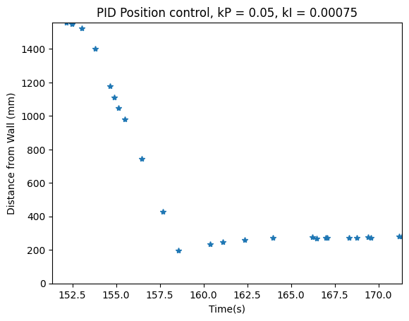
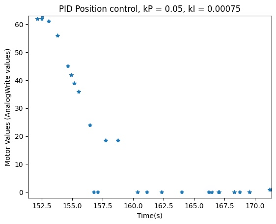

Objective
In lab 6, I implemented closed-loop control through PID control. For this task, I chose to do position control, in which I sped towards a wall and stopped 1ft in front of it.
Prelab
For the prelab, I created a setup to allow for easy debugging when testing the task. To do this, I made sure that I could do the following:
- Read user input over bluetooth (in this case, the time to run the PID control and the parameters)
- Execute the PID control
- Send the timestamped motor PWM values and ToF distance information back over bluetooth.
Bluetooth
Sending the data every time a new reading was available would be too slow. Thus, I stored all of the data in arrays to send after the main control loop finished. There was just one command used, TUNE_PID, which had a time limit for the duration to make sure the robot would not run forever. To send data over bluetooth, I utilized the same format as with other labs. I sent the data as part of the send_command argument in the order of number of time to run the command (in ms), P (proportional parameter), and I (integral parameter). On the Arduino side, I read these values and assigned them to their corresponding variables.
The following code shows sending the input over bluetooth in the Jupyter notebook with example 20s, kP = 0.03 and kI = 0.001.
The following code shows receiving the input over bluetooth in the Arduino code.
To receive data over bluetooth, I again utilized the same format as with other labs. From the Arduino side, I stored the data in arrays that held both the time the data was stored and the actual data (PWM and ToF data).
The following code shows receiving the input over bluetooth in the Arduino code.
On the python side, I created a handler that parsed the PID data. I used the "|" separator to split the data and used the identifier "T", "D2", and "V" to identify which type of data it was. I then stored these in arrays to be easily plotted.
Note: I still required significant time in-lab to fix errors for this section.
Lab Tasks
Proportional
For this lab, I chose task A. In this task, I needed to drive a car from around 2-4m from the wall and drive it towards the wall as fast as possible, stopping it a foot before the wall. I first started by using the P of the PID.
After receiving a ToF reading, I calculated the error of ToF reading - target value (304 mm). This error was then multiplied by the kP value that was set by the user for the new motor value. The code is below:
Note that since the robot does not move when the motor value is less than 50, the code exits.
After multiple trials where kP was set to 0.03, 0.05, 0.07, 0.1, 0.5, etc, I found that the kP value that worked was 0.05. With this, the robot did not come close to hitting the wall and was able to successfully go to the target distance. The video for the kP run is show below.
Proportional and Integral
As an M.Eng student, I had to implement either PI, PD, or PID controller. For this, I chose to implement a PI controller.
I kept track of the time between ToF readings using the variables last_terror (last time of error) and curr_terror (current time of error). The same error value from the previous section was used. However, the a new variable I_sum was se to (error * ((curr_terror - last_terror)/1000)), where 1000 scaled the dt to seconds rather to milliseconds. This value added up all of the errors over the course of the tuning, allowing for higher stability. Additionally, the calculation for the motor value changed to be (kP * error + kI * I_sum) to include the integral portion of the PI controller.
To tune this, I first set the value of kP higher until I got oscillations. This happened to be kP = 0.1. Then, I set this value to be half of its value to tune the integral component. I slowly increased the kI value until the robot became as stable as possible, slightly overshooting the target and then returning to the proper target location. One thing to note is that with the kI component, there was oscillation that occurred around the target due to the accumulation of error and the fact that the motors could not account for minute errors. However, with further tuning, these oscillations became very small.
The code for this section as well as the plots are shown below:
 Wind-Up Protection
I had to implement wind-up protection for this lab. Wind-up refers to the way that overshoot will happen when a large error happens due to the integral accumulation of errors. This is important especially in the case with a PI controller, since the errors are very large initially due to the far distance from the wall. If the robot immediately makes this error smaller by moving quickly towards the wall, there is a chance that the robot will not overshoot. However, if this is not the case, such as if the robot is on a surface that provides a lot of friction (ex: carpet), the robot may move slower, causing the large error to accumulate. Thus, when the robot does begin moving, the controller is unable to reflect this and the robot overshoots the target significantly.
To prevent this, I utilized clamping. The speed of the motor was already limited within the code. However, I added the following lines of code to clamp the I_sum variable to be 1000.